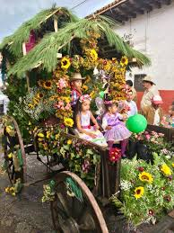

El corazón de Mazamitla, donde encontrarás la Parroquia de San Cristóbal, una iglesia de estilo neogótico que se alza majestuosamente sobre la plaza. Disfruta de un paseo relajante y admira la arquitectura colonial de los edificios circundantes.

Haz una caminata corta hasta esta hermosa cascada que se encuentra a solo unos minutos del centro de Mazamitla. Refréscate en sus aguas cristalinas y toma fotos impresionantes.
Mazamitla es conocido como el "Jardín de México" debido a su producción de flores. Visita la Feria de las Flores, que se celebra en agosto, para ver coloridos desfiles y disfrutar de música y comida típica.